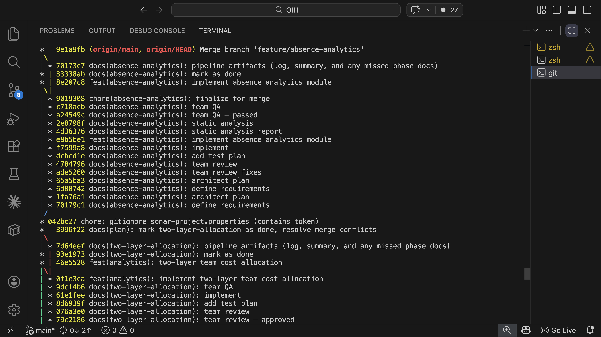

The pipeline
The AI writes the code. Static analysis, test suites, and adversarial review decide if it's any good.
A process framework that lets one person handle what normally requires coordination across several roles, from requirements through QA, by structuring how AI agents work and how their output gets verified. Every phase produces a committed artifact. Every decision is traceable in git history.
What it does
Instead of ad-hoc prompting, the pipeline runs a structured development workflow: requirements, architecture, test planning, review, implementation, quality assurance, static analysis, and release. 33 commands and 14 specialist AI agents carry the work, spanning phase commands, project planning, and utilities. The machine order is eight phases; in interactive work, UX design and manual testing join the sequence.
Guardrails
AI agents with filesystem access need hard boundaries, not guidelines.
The security model has three layers. At the kernel level, a
macOS Seatbelt sandbox restricts all file writes to the project directory
and /tmp. Credential paths like ~/.ssh and
~/.aws are blocked from reads entirely. At the application
level, permission deny rules prevent the AI from editing shell config,
its own settings, or credential files. At the git level, any tracked
file change is reversible. The boundaries hold regardless of what the
model does.
This is a solo setup, but the layers are the same ones any organisation will need when AI agents operate beyond a sandbox notebook: kernel-level containment (a macOS sandbox here, containers in a team setting), application-level policy, and version control as the reversibility guarantee.
How the workflow runs
In practice, the work splits like this:
- LLM handles: Requirements analysis, UX reasoning, architectural decisions, code generation, test writing, documentation
- Deterministic tools handle: Type checking (mypy, tsc), linting (ruff, eslint, shellcheck), code quality (SonarQube), test execution (pytest, vitest), formatting
- The pipeline enforces: TDD (write the failing test first, a pre-commit hook blocks violations), phase-gated commits, and an evaluator-optimizer loop where no agent marks its own work
The LLM can sound confident about broken code. The type checker doesn't care how confident it sounds. The whole system is built on that gap.
Here's what a feature looks like going through the full pipeline:
Create isolated git worktree and feature branch.
Requirements and acceptance criteria. In flow mode, UX design and user flows are added. No hard gates, all creative work.
Module design and dependency ordering, then the test plan, then review. The test plan comes before review on purpose: five specialist agents check the design and the test scope together, a fixer resolves findings, reviewers re-verify. Cycles until clean.
TDD: write the failing test first, then code, then refactor. Linters and type checkers (ruff, mypy, tsc, shellcheck) run inline during implementation. The LLM fixes what the tools flag before the phase can complete.
Human verifies in browser. Five agents review the implementation against the full artifact chain. Deterministic gate: all tests pass or it doesn't ship.
SonarQube scan, coverage enforcement, and baseline regression checks run last, so they see the code as it will actually merge, including every fix QA introduced.
Merge feature branch to main, push, clean up worktree. If the feature is part of an execution graph, update the plan and persist a compact context block for the tasks that depend on it.

Git log showing the audit trail. Every phase produces a traceable commit on the feature branch.
The phase order is evidence, not opinion
The sequence above has changed twice, both times because the audit trail showed a leak. Static analysis originally ran right after implementation. Then an unattended run revealed the gap: QA found issues, the agent fixed them, and the fixes merged without ever being scanned. Static analysis now runs after QA, so it verifies the code that actually ships. Test planning originally came after review. That let a quiet failure mode through: QA checked that every planned scenario had a test, but nobody checked whether the plan itself covered the requirements. The test plan now comes before review, so reviewers verify the test scope along with the design. Process changes here are driven by observed failures, not by taste.
No agent marks its own work
The same evaluator-optimizer pattern runs in plan review (/team-review),
quality assurance (/team-qa), and project planning (/plan-project --team).
Specialist agents review independently, a separate fixer resolves their findings,
and the original reviewers run again to verify. The 14 agents span architect,
analyst, lead developer, security auditor, QA engineer, performance engineer,
UX designer, code reviewer, DevOps engineer, dependency auditor, test explorer,
fixer, a deviation assessor that classifies drift from the plan, and a canary
for diagnostics. No agent ever approves its own fixes. If mypy disagrees with
the code, it doesn't matter how eloquently the agent argues otherwise.
Every command knows what came before
Each phase runs in a fresh session. No conversation history carries over. When the work is part of an execution graph, a command first orients itself in the graph, which serves as an index rather than a document to ingest. Then it loads exactly the committed artifacts it needs. This is context engineering applied to an agent harness: the pipeline controls what each agent sees, rather than letting context accumulate across a long conversation.
/implement reads the requirements, the architecture plan,
and the test plan. /team-qa reads the full chain: what was
required, what was designed, what was planned for testing, and what was
built. Static analysis findings come later, because that phase runs
after QA. But none of them inherit the reasoning or mistakes from an
earlier phase's session. Every phase starts clean, with curated
context from git.
Each command reads what was committed before it. The chain is cumulative: /static-analysis sees everything from /ba through /team-qa. No context is passed between commands manually. It's all in git.
Running work bigger than one feature, and running it unattended, is the next chapter: autopilot and execution graphs.
Reflections
There's a maturity curve to working this way. Early on I wanted the pipeline close, human checkpoints on everything, full permission prompts, reviewing every output. As the setup matured and I saw enough cycles pass the gates cleanly, I started loosening the grip: broader permissions, lighter review modes, tasks flagged for autopilot. I didn't plan that progression. It happened because trust builds from evidence, and the pipeline generates evidence at every phase. Turns out it's easier to loosen a working system than to guess the right constraints upfront.
What went wrong
The command surface area grew organically as new needs appeared, and the supporting commands still need consolidation. Sometimes the right engineering decision is to delete things, even things that work. And as the phase-order changes above show, two quality leaks made it into unattended runs before the audit trail caught them. I'd rather have a process that reveals its own gaps than one that hides them, but each gap existed longer than it needed to because I only went looking after something felt off. Scheduled process review is on the backlog for a reason.
View on GitHub
tomashermansen-lang/watchfloor